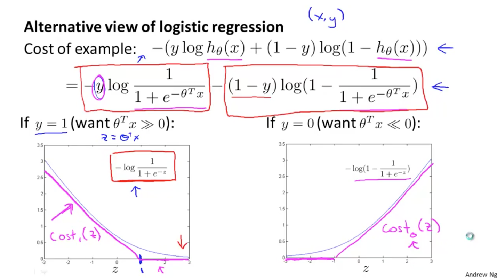
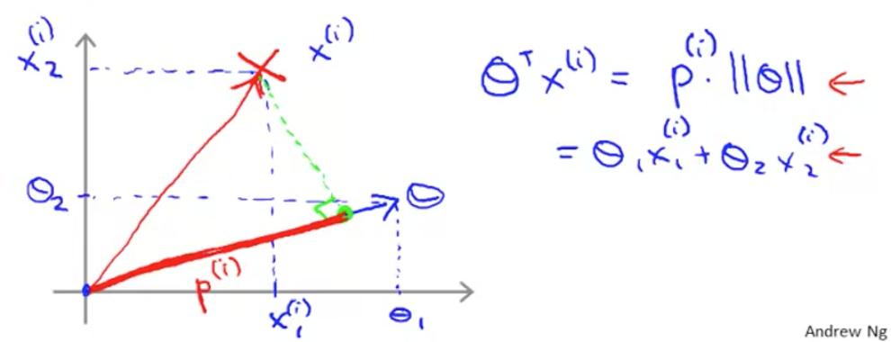
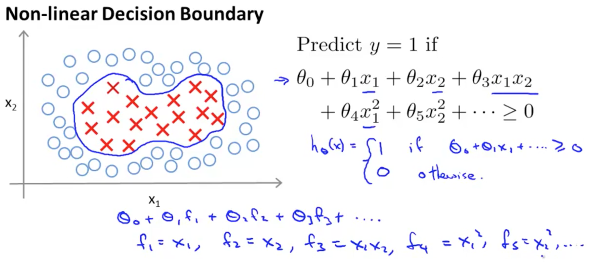
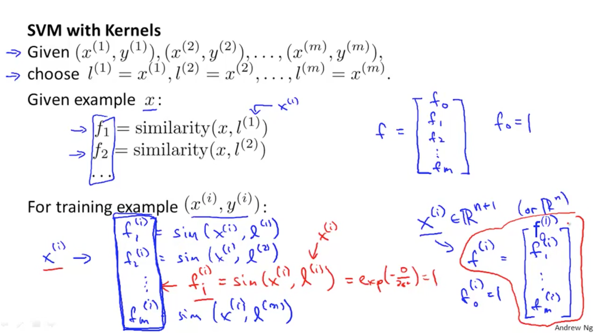
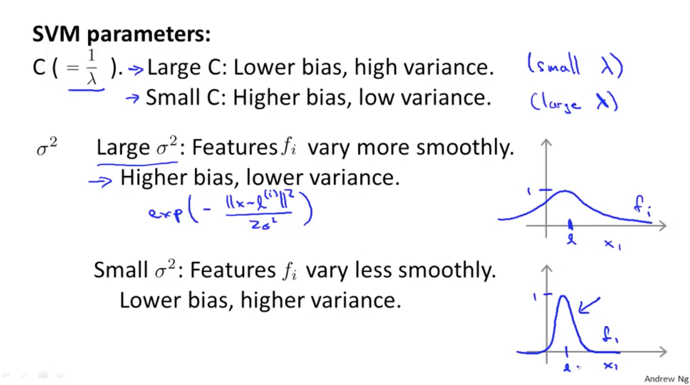

支持向量机(SVM)¶
线性¶
SVM的线性分类问题得先从逻辑回归说起。
{kind=link}
如上图所示，在y=1和y=0两种情况下，分别对损失函数做了更严格的调整，并对整个损失函数除以了 \(\frac{\lambda}{m}\) ,即：
\[LR : \min_\theta\frac{1}{m}\sum_{i=1}^m\left[y^{(i)}\left(-\log h_\theta(x^{(i)})\right)+(1-y^{(i)})\left(-\log(1-h_\theta(x^{(i)}))\right)\right]+\frac{\lambda}{2m}\sum_{j=1}^n\theta_j^2\]
\[SVM : \min_\theta C\sum_{i=1}^m\left[y^{(i)}cost_1(\theta^Tx^{(i)})+(1-y)^{(i)}cost_0(\theta^Tx^{(i)})\right]+\frac{1}{2}\sum_{j=1}^n\theta_j^2\]
为了最小化损失函数，得让函数的第一项无限逼近于0，而正则项最小化，即
\[\min_\theta\frac{1}{2}\sum_{j=1}^n\theta_j^2\]
\[\begin{split}\begin{cases}
\theta^Tx \ge 1(not\ just \ge 0) & \mbox{if }y=1 \\
\theta^Tx \leq -1(not\ just \leq 0) & \mbox{if }y=0
\end{cases}\end{split}\]
而
\[\theta^Tx^{(i)}=p^{(i)}\cdot\|\theta\|\]
其中 \(p\) 为 \(x\) 向量在 \(\theta\) 向量上的映射，同时也是 \(x\) 到分界超平面的距离，如下图所示
{kind=link}
所以为了最小化目标函数，在 \(\theta\) 尽可能取最小值的情况下，尽可能增大 \(p\) 。SVM就是通过这样的方式来增大样本与决策边界的距离，同时最小化特征的权重参数。
非线性¶
对于非线性的决策边界，一个简单的典型例子如下图,其中部分特征由高阶项组成:
{kind=link}
我们的假设是将所有的样本都映射到另一个空间(高维空间，维度为训练样本的数量m)，而在这个高维空间中样本线性可分。因此:
\[\begin{split}\theta_0+\theta_1x_1+\theta_2x_2+\theta_3x_1x_2+\theta_4x_1^2+\theta_5x_2^2+\cdots\\
=\theta_0+\theta_1f_1+\theta_2f_2+\theta_3f_3+\theta_4f_4+\theta_5f_5+\cdots+\theta_mf_m\end{split}\]
其中 \(f\) 是 \(x\) 到另一个高维空间的映射函数，也称为两者的相似函数，也是传说中的核函数！高斯核函数是一种常用的核函数:
\[\begin{split}\begin{align}
f_m & = similarity(x,l^{(i)})=\exp\left(-\frac{\|x-l^{(i)}\|}{2\sigma^2}\right)\\
& \approx
\begin{cases}
1 & \mbox{if }x \approx l^{(i)} \\
0 & \mbox{if }x\ far\ from\ l^{(i)}
\end{cases}
\end{align}\end{split}\]
其中 \(l^{(i)}\) 即为 \(x^{(i)}\)
所以总的svm求解步骤可以总结为如下图:
{kind=link}
目标函数:
\[LR : \min_\theta\frac{1}{m}\sum_{i=1}^m\left[y^{(i)}\left(-\log h_\theta(x^{(i)})\right)+(1-y^{(i)})\left(-\log(1-h_\theta(x^{(i)}))\right)\right]+\frac{\lambda}{2m}\sum_{j=1}^n\theta_j^2\]
\[SVM线性 : \min_\theta C\sum_{i=1}^m\left[y^{(i)}cost_1(\theta^Tx^{(i)})+(1-y)^{(i)}cost_0(\theta^Tx^{(i)})\right]+\frac{1}{2}\sum_{j=1}^n\theta_j^2\]
\[SVM非线性 : \min_\theta C\sum_{i=1}^m\left[y^{(i)}cost_1(\theta^Tf^{(i)})+(1-y)^{(i)}cost_0(\theta^Tf^{(i)})\right]+\frac{1}{2}\sum_{i=1}^m\theta_i^2\]
SVM参数:
{kind=link}
求解¶
SVM求解一般会引入拉格朗日乘子,将目标函数转换成对偶问题,这样更有利于求解。以线性SVM为例,为了将目标函数化为更一般式,令目标值 \(y\) 为[-1,1],则目标函数为:
\[\min_\theta \frac{1}{2}\sum_{j=1}^m\theta_j^2\qquad s.t.,y^{(i)}(\theta^Tx^{(i)}+b)\ge1\]
引入拉格朗日乘子 \(\alpha\) ,并使函数最大化:
\[\max_{\alpha_i\ge0}L(\theta,b,\alpha) = \frac{1}{2}\sum_{j=1}^n\theta_j^2-\sum_{i=1}^m\alpha_i\left(y_i(\theta^Tx_i+b)-1 \right)\]
目标函数转化为对偶问题:
\[\min_{\theta,b} \max_{\alpha_i\ge0}L(\theta,b,\alpha)\]
先求极小值再求极大值更容易求解:
\[\max_{\alpha_i\ge0} \min_{\theta,b}L(\theta,b,\alpha)\]
SVM对异常值比较敏感,所以经常会引入松弛变量 \(\zeta\),即允许数据点在一定程度上偏离超平面.此时目标函数可转化为:
\[\min_\theta \frac{1}{2}\sum_{j=1}^n\theta_j^2+C\sum_{i=1}^m\zeta_j^2\qquad s.t.,y^{(i)}(\theta^Tx^{(i)}+b)\ge1-\zeta^{(i)}\]
{kind=link}
{kind=link}